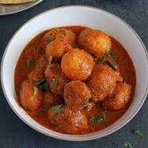
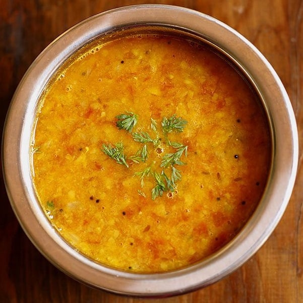

Dum Aloo

Dum Aloo is a popular North Indian dish that features baby potatoes cooked in a
rich and flavorful gravy. The potatoes are usually first deep-fried or parboiled
and then simmered in a spicy and tangy tomato-based curry. The dish is characterized
by its aromatic blend of spices, including cumin, coriander, garam masala, and Kashmiri
red chili powder, which imparts a vibrant color without excessive heat.
Palak Paneer
 Palak Paneer is a classic Indian dish that combines spinach (palak) and paneer (Indian cottage cheese)
in a rich and creamy curry. The dish is seasoned with a blend of aromatic spices such as cumin, coriander,
garam masala, and fenugreek, providing a delightful balance of flavors. Palak Paneer is a nutritious and
satisfying vegetarian dish often served with rice or Indian bread like naan or roti.
Palak Paneer is a classic Indian dish that combines spinach (palak) and paneer (Indian cottage cheese)
in a rich and creamy curry. The dish is seasoned with a blend of aromatic spices such as cumin, coriander,
garam masala, and fenugreek, providing a delightful balance of flavors. Palak Paneer is a nutritious and
satisfying vegetarian dish often served with rice or Indian bread like naan or roti.
Veg Kolhapuri
 Veg Kolhapuri is a flavorful and spicy vegetarian dish originating from the Kolhapur region in Maharashtra, India.
It is known for its robust and aromatic curry made with a medley of vegetables. The curry is rich in spices, including
red chili powder, coriander, cumin, and a special Kolhapuri masala blend, which gives it a distinctive taste and a deep
red color. The dish is celebrated for its bold
flavors and is a popular choice among those who enjoy spicy and hearty Indian cuisine.
Veg Kolhapuri is a flavorful and spicy vegetarian dish originating from the Kolhapur region in Maharashtra, India.
It is known for its robust and aromatic curry made with a medley of vegetables. The curry is rich in spices, including
red chili powder, coriander, cumin, and a special Kolhapuri masala blend, which gives it a distinctive taste and a deep
red color. The dish is celebrated for its bold
flavors and is a popular choice among those who enjoy spicy and hearty Indian cuisine.
Gutti Vankayya Curry
Gutti Vankaya Curry is a traditional South Indian dish hailing from the state of Andhra Pradesh. The dish features small
brinjals or eggplants stuffed with a flavorful spice mix and then cooked in a tangy and aromatic curry. The stuffing
is made from a blend of roasted spices, coconut, tamarind, and sometimes peanuts or sesame seeds, creating a rich and
textured filling. It is often served with rice or Indian bread like chapati.
Tomato Pappu(Dal)

Andhra Tomato Pappu is a flavorful and traditional lentil-based dish originating from the Andhra Pradesh region in South India.
"Pappu" in Telugu refers to lentils, and this dish is primarily made with split pigeon peas or toor dal. The key feature of
Andhra Tomato Pappu is the addition of tomatoes, which contribute a tangy and vibrant flavor to the lentil curry.Andhra Tomato
Pappu is often garnished with fresh cilantro and served with steamed rice or Indian bread like chapati. The combination of tangy
tomatoes and the nutty flavor of lentils makes this dish a comforting and wholesome part of Andhra cuisine.
Bendakaya pulusu(Okra/Lady's finger Curry)
Bendakaya Pulusu is a popular and tangy Andhra-style curry featuring okra (bendakaya or ladyfinger) as the main ingredient. Hailing
from the southern region of India, this dish is known for its distinctive sour and spicy flavors. Bendakaya Pulusu is often spiced with a blend
of ground coriander, cumin, turmeric, and red chili powder, creating a flavorful and well-balanced curry. It is commonly served with
steamed rice, making it a delicious and comforting dish in Andhra cuisine.
Drumstick Masala Curry
Andhra-style Drumstick Masala Curry is a flavorful and aromatic dish that features drumsticks (moringa pods) in a rich and spicy curry.
This dish is popular in the Andhra Pradesh region of South India, known for its vibrant and bold flavors.To prepare the curry, drumsticks
are typically cut into pieces and cooked in a spiced masala base made from a blend of onions, tomatoes, and a variety of spices.
Andhra-style Drumstick Masala Curry is commonly served with steamed rice or Indian bread, making it a delicious and satisfying part of Andhra cuisine.
The combination of drumsticks and the flavorful masala curry creates a dish that is both nutritious and appetizing.
Cauliflower Curry
Andhra-style Cauliflower Curry is a delectable dish originating from the Andhra Pradesh region in South India. Renowned for its bold and spicy flavors,
this curry features cauliflower as the main ingredient. The cauliflower is typically cooked in a flavorful masala base, showcasing the distinctive culinary
style of Andhra cuisine. The curry is known for its aromatic blend of spices, providing a rich and satisfying taste. Served with rice or Indian bread,
Andhra-style Cauliflower Curry is a popular choice for those who appreciate the robust and vibrant flavors of South Indian cuisine.
Aloo Gobi Fry
Aloo Gobi Fry is a delicious and popular North Indian dish that showcases the delightful combination of potatoes (aloo) and cauliflower (gobi) in a dry,
stir-fried preparation. The dish is known for its simplicity and comforting flavors.The dish has a comforting and homely appeal, with the tender potatoes
and cauliflower absorbing the flavorful spices. Aloo Gobi Fry is often garnished with fresh coriander and served as a side dish with Indian bread like
chapati or paratha. Its hearty and satisfying taste makes it a favorite among those who appreciate the simplicity and deliciousness of home-cooked Indian cuisine.
Mixed vegetable curry
Mixed Vegetable Curry is a flavorful and colorful dish that combines a variety of seasonal vegetables in a rich and aromatic curry. The vegetables are typically
cooked until tender, and the curry is infused with a blend of spices, creating a harmonious medley of flavors. This versatile dish often features a combination of
carrots, peas, potatoes, beans, and other vegetables, providing a diverse and nutritious array of textures and tastes.Its vibrant appearance and well-balanced flavors make it a
delightful addition to any meal, often served with rice, bread, or other staple grains.